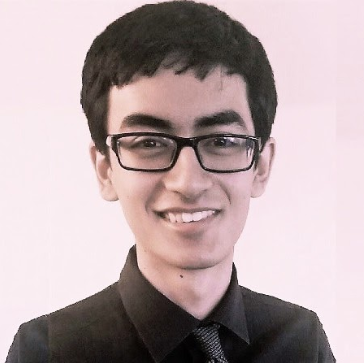
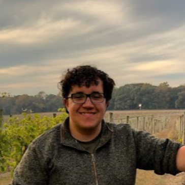
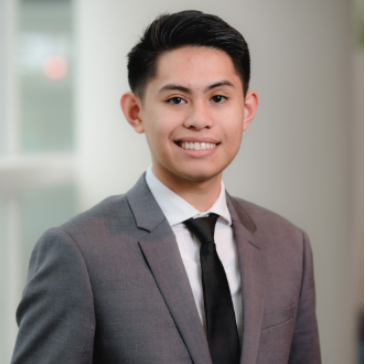
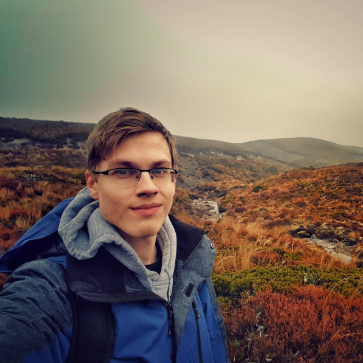

Meet the Team
We are the team behind the development of the ASIV. The project is part of Stevens Institute of Technology's Innovation Expo, which looks to promote innovation and creativity in the solutions of tomorrow.
Omar Aziz
4/4 Mechanical Engineering

Noah Bolzoni
5/5 Mechanical Engineering

Brandon Castro
4/4 Mechanical Engineering
Sean Maggio
4/4 Mechanical Engineering

Anthony Lucero
4/4 Mechanical Engineering

Marcin Wisniowski
4/4 Electrical Engineering